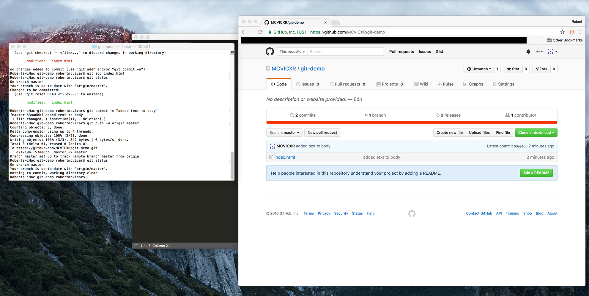

24. After another successful push, it's always a good idea to do another git status to make sure things are ok. You can also see the time of your latest commit update in your Github repo. To summarize, your workflow should consist of regular commits and occasional pushes. Following these steps should result in succesful commands and after enough practice, you'll know them by heart.
